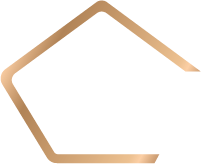

Вертикальная компоновка
Знак сверху, под ним «ПЛЮСОН», под ним «от iViSiON». Всё по центральной оси. Под каждой картинкой — её полные параметры: шрифты, кегли, размеры, цвета и точные стопы градиента.
Вертикальный · для ТЁМНОГО фона

ПЛЮСОН
от iViSiON
Полные параметры этой картинки
- Файл PNG
plusson-logo-vertikalnyy-dlya-temnogo-fona.png
821 × 790 px, прозрачный фон- Компоновка
- три элемента в столбик, выравнивание по центральной оси
- Знак
logo_no_ivision_wwhite.png— БЕЛАЯ версия
высота110px- Шрифт «ПЛЮСОН»
- Oswald, вес
600(SemiBold)
кегль52px, трекинг0.055em - Шрифт «от iViSiON»
- Roboto, вес
500(Medium), начертание ПРЯМОЕ
кегль16px, трекинг0.01em - Цвет «от iViSiON»
#FFFFFF— чистый белый- Зазоры
- знак → ПЛЮСОН
14px
ПЛЮСОН → подпись7px - Градиент «ПЛЮСОН»
- угол
45deg, инверсия С БЛИКОМ, 12 стопов:
#FFCFA4 0%,#FFDEBC 9%,#C08E62 22%,#A87850 30%,#C08E62 38%,#FFDEBC 50%,#FFCFA4 55%,#C08E62 70%,#A87850 78%,#C08E62 86%,#FFDEBC 96%,#FFCFA4 100% - Роли цветов
- персик
#FFCFA4— база
блик#FFDEBC— у краёв буквы
тень#A87850— внутри буквы - Фон для превью
linear-gradient(45deg, #25455D, #0a1520)
Вертикальный · для СВЕТЛОГО фона
ПЛЮСОН
от iViSiON
Полные параметры этой картинки
- Файл PNG
plusson-logo-vertikalnyy-dlya-svetlogo-fona.png
821 × 790 px, прозрачный фон- Компоновка
- три элемента в столбик, выравнивание по центральной оси
- Знак
logo_no_ivision_blue.png— СИНЯЯ версия
высота110px- Шрифт «ПЛЮСОН»
- Oswald, вес
600(SemiBold)
кегль52px, трекинг0.055em - Шрифт «от iViSiON»
- Roboto, вес
500(Medium), начертание ПРЯМОЕ
кегль16px, трекинг0.01em - Цвет «от iViSiON»
#25455D— фирменный тёмно-синий- Зазоры
- знак → ПЛЮСОН
14px
ПЛЮСОН → подпись7px - Градиент «ПЛЮСОН»
- угол
45deg, БЕЗ БЛИКА, 8 стопов:
#C8915F 0%,#D8A271 12%,#BC8450 30%,#A87244 42%,#B67E4C 56%,#E0AC7C 72%,#CE9866 86%,#B9814E 100% - Роли цветов
- светлая полоса
#E0AC7C
тень#A87244— контраст с белым 4.1:1 - Почему палитра другая
- на белом блик не работает: светлее белого ничего нет, светлая полоса читается как дырка в букве. Чистый
#FFCFA4даёт контраст 1.3:1 — буквы тают - Фон для превью
#FFFFFF
Где применять вертикальную компоновку
Аватарки, квадратные посты в соцсетях, печать на одежде, любые узкие места, где ширина ограничена, а высота есть.